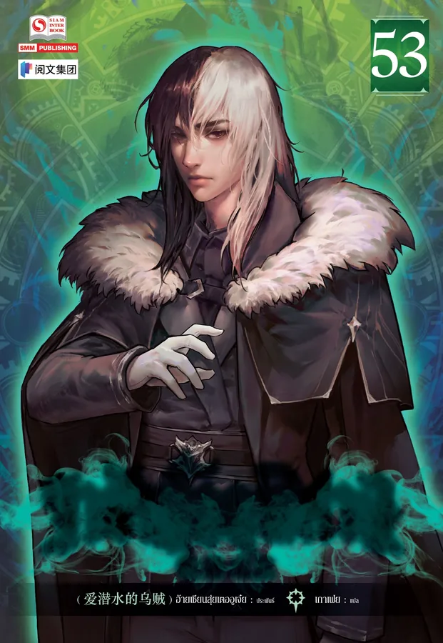

Overview
Hornacis… Flegrea… Hornacis… Flegrea… Hornacis… Flegrea…
Antigonus' raving, Book 1, chapter 32
Antigonus is the youngest son of the Demonic Wolf Flegrea and is the brother of Mother of the Sky, "He" was a Subsidiary God of the Annihilation Demonic Wolf Flegrea in the Second Epoch. "He" was a King of Angels of the Fool Pathway known as The Half-Fool in the Fourth Epoch.1Book 1, chapter 1104
Appearance
Original Form An eight-legged Demonic Wolf with the transparent worms twisted among its thick black short hairs.
Human Form "His" appearance incorporates characteristics of both one of old-age and youthfulness with hair that is half white and half black. "He" had a pair of dark black eyes, decent facial features, and a thick, black tuft of fur on "His" cheeks. "He" has maintained this appearance throughout the Fourth Epoch.5
Background
Antigonus was the youngest son of Flegrea, a born mythical creature with the powers of a Miracle Invoker. “He” feared "His" bloodthirsty father the most and despised the crude methods employed by "His" brothers and sisters when dealing with their prey. “He” believed that prey should be hoisted up for slow, refined enjoyment to match their status. "He" hated the God of Wishes and found the God of the Dead gloomy and disgusting. However "He" had a good impression of the Goddess of Misfortune who had a gentle personality and met "His" beauty standards as both a demonic wolf and a human, while some of "His" older sisters and brothers wanted to usurp "Her" position.2Book 1, chapter 1374
After the death of "His" father, "He" and Mother of the Sky, "His" sister, crossed the sea from the Eastern Continent and came to the Northern Continent, "They" established a concealed kingdom, the Nation of the Evernight, in the uninhabited Hornacis Mountain Range. The two siblings laid low, merely gathering believers and citizens for "Their" kingdom. "He" also created a City of Dead, Foggy Town alongside the nation, where "Their" dead believers were turned into "His" marionettes for an Attendant of Mysteries. According to "Him", this was the best and most peaceful period in "His" life; "His" sister and "He" also gained humanity thanks to "Their" believers.
After the Cataclysm, "He" finally rose to Sequence 1 and turned "Himself" into a human. Taking Antigonus as "His" surname, "He" left the Hornacis Mountain and returned to the world outside "Their" concealed kingdom.2 The advancement further awakened the "will" of the Celestial Worthy of Heaven and Earth for Blessings inside "Him", making "Him" losing "His" consciousness and memory at times.
Despite "His" family's apparent high standing in the Solomon Empire, at some point "He" made a secret transaction with Alista Tudor6 and eventually went over to the Blood Emperor's side after the fall of the Black Emperor. It was after the First Solomon Empire that "He" received the help of Adam and Amon—who also supported the Blood Emperor—to carry out the Fool to accommodate the the Uniqueness of Fool.3Book 1, chapter 13587 “They" captured a demigod from the Solomon Empire and got Adam to do a deeper level hypnotism act and a transplant of the corresponding memory, making him believe that he was Antigonus. Then, with Amon working with Antigonus, "He" stole Antigonus’s identity and fate while Antigonus used the "Tampering" authority to combine the identity and fate with the experimental subject. The demigod from the Solomon Empire began living in the state of Antigonus, and after some time, he took the initiative to accommodate the Uniqueness of Fool and undoubtedly lost control. At this moment, the real Antigonus removed the "Tampering", allowing "His" identity and fate to return into Amon’s hands. Amon ended the theft and returned them to the original owner. This created two different fates of Antigonus existing at the same time: Antigonus failed to accommodate the Uniqueness and lost control, and Antigonus was perfectly well with no problem. Therefore, fate has been fooled to a certain extent, and Antigonus successfully became The Half-Fool. However, the accommodation also worsened the "will" of the Celestial Worthy inside "Him".
During the War of the Four Emperors, "He" with some assistance from Bethel Abraham, confronted the ancestor of the Zaratul family, an Attendant of Mysteries Angel, killed "Him", and obtained "His" Beyonder characteristics.1
Antigonus failed to suppress the spiritual "will" of the Celestial Worthy and "Their" psyches were stitched together, "He" could use this identity to influence Sefirah Castle. The Evernight Goddess took advantage of this connection to "Attendant of Mysteries" the destination of the last set of Sequence 9 to 1 characteristics of the Fool Pathway that was supposed to accompany Klein's transmigration, to the Forsaken Land of the Gods.3
"He" was sealed inside a palace at the peak of the Hornacis Mountain Range, the Nation of the Evernight, that was connected to Foggy Town by the Evernight Goddess during the Church of the Evernight Goddess's attack on the Nation of the Evernight in the Fourth Epoch. Inside the town, every time the moon shone on it, "He" would let out all "His" marionettes and let them act like they were just ordinary residents living their daily lives. However, should "He" find outsiders, "He" would instinctively turn them into "His" marionettes.
History
Lord of Mysteries
During Klein's Apotheosis Ritual, "He" lost the the Uniqueness of Fool and Sequence 1 Beyonder characteristic to Klein and was finally able to regain "His" senses. "He" was last seen waking up from "His" deep slumber in the ancient palace on Hornacis Mountain peak.8
Circle of Inevitability
"He" was captured and imprisoned by the Church of the Evernight Goddess, however, after the Evernight Goddess provided a revelation and promised "Him" one thing, "He" began working for them.
"His" dream image in The Fool's Dream is An Xiaotian, an actor. When the Tarot Club decided to cast An Xiaotian as Gehrman Sparrow for the film "The Great Pirate 3", they contacted the real Antigonus to make sure there would be no latent problems. According to "Him", "He" could sense The Fool's Dream, but did not enter it nor did "He" want to.4Book 2, chapter 971
Trivia
- As a result of Antigonus once being in a state of madness and mentally closer to the Celestial Worthy, "His" marionette, Panatiya became in the possession of both "Himself" and the Celestial Worthy.9
- "His" dream image in The Fool's Dream, An Xiaotian, is an orphan raised by "His" older sister. "He" dropped out after high school and entered the entertainment industry. "His" sister fell seriously ill and is currently in a vegetative state. To maintain hope for "His" sister's awakening, "He" worked hard to become a big star and earned quite a bit of money. On the day of the shoot for the film "The Great Pirate 3", An Xiaotian had a very serious car accident and also became a vegetable.4
Translations
| Language | Name |
|---|---|
| Chinese | 安提哥努斯 |
| Thai | แอนทิโกนัส |
References
- Book 1, chapter 1104.
- Book 1, chapter 1374.
- Book 1, chapter 1358.
- Book 2, chapter 971.
- Cuttlefish's description of characters from 4th Epoch.
- Book 1, chapter 9.
- Author's WeChat post sun_abilities, part 54.
- Book 1, chapter 1381.
- Book 2, chapter 927.
Source
Article adapted from the Antigonus article on the Lord of the Mysteries Fandom wiki (CC BY-SA). Chapter numbers follow that article's citation format.
Image gallery
